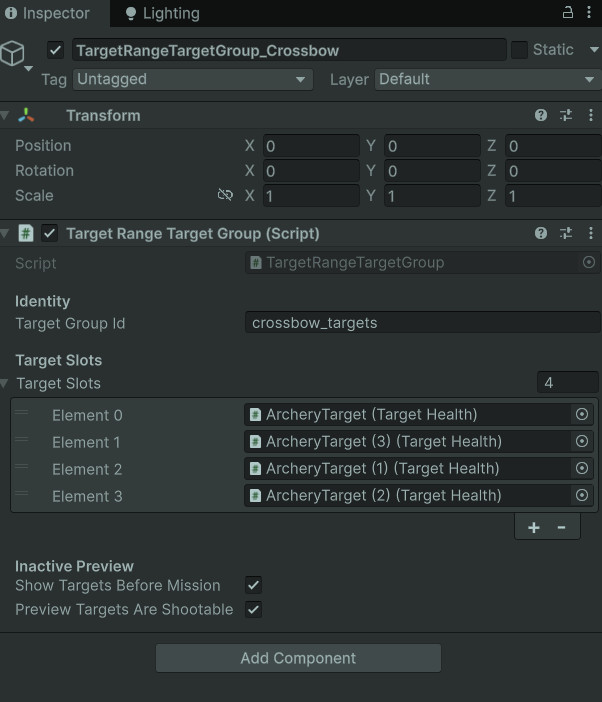
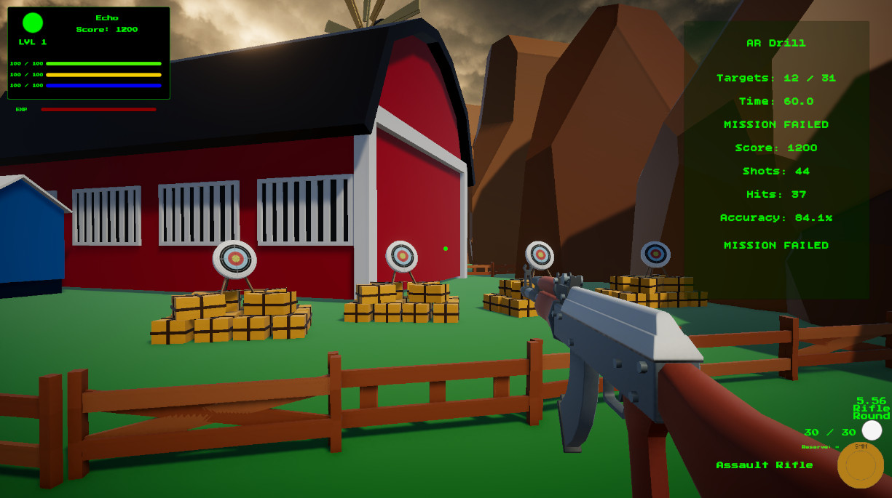
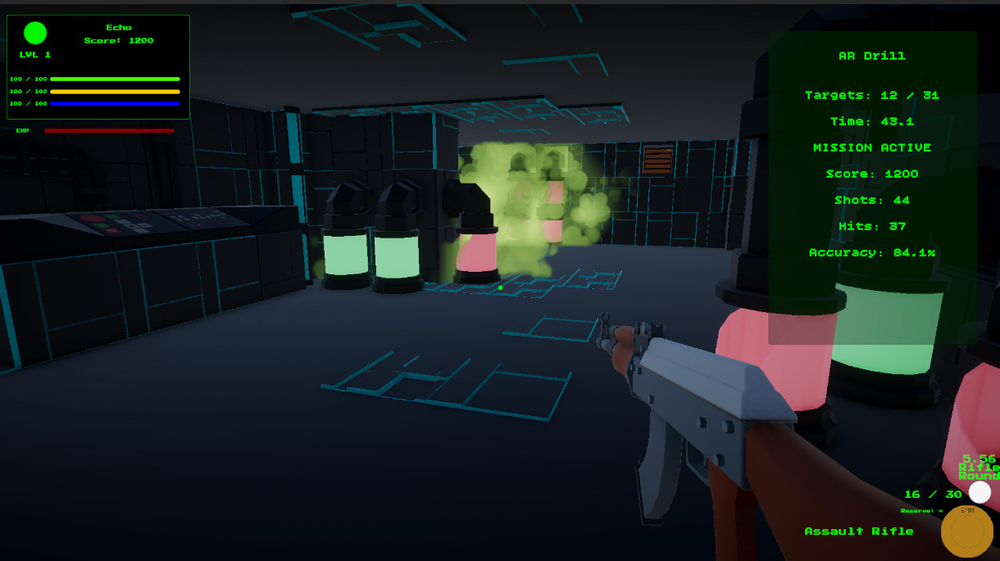
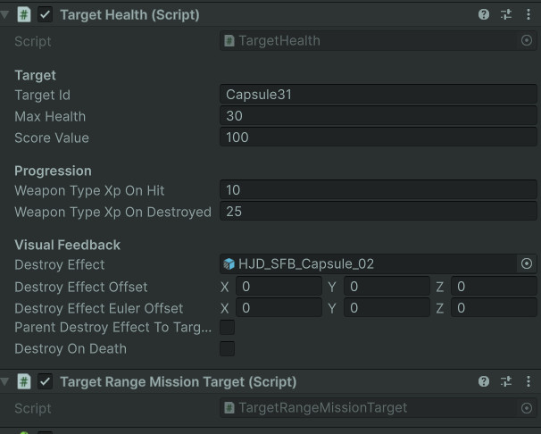

Target Group Inspector
Target groups define which targets belong to a drill and how that drill should activate, respawn, or preserve them.
- Target Group
- Group ID
- Respawn Rules
A reusable Unity target system for drill-specific target groups, target slots, respawning objectives, destroy-all missions, target health, damage routing, and mission completion notifications.
This system handles the targets themselves: where they appear, how they reset, how they break, and how they tell the mission that progress happened.
The Target Spawning & Objective Modes system gives each target range mission a reusable way to activate the correct target group, choose active target slots, handle target destruction, and report objective progress back to the mission controller.
Each target group can support different drill behavior. Some missions use active target limits and respawn delays, creating an arcade-style target loop. Other missions use destroy-all behavior, where targets stay broken and the objective is to clear the entire group.
This keeps target behavior modular. The mission framework does not need to micromanage every target. It only needs to know which group is active and when a target has been destroyed.
Manage target groups, activation, respawning, destroyed state, damage response, and mission objective notifications.
Activate group → Spawn active targets → Damage target → Destroy target → Notify mission → Respawn or preserve state.
Demonstrates modular objective design, runtime object management, damage interfaces, and reusable gameplay rules.
Screenshot references for target group setup, target slots, active gameplay targets, destroyed-state behavior, health values, and projectile hit routing.

Target groups define which targets belong to a drill and how that drill should activate, respawn, or preserve them.

Slots let the range treat individual target objects as part of a larger drill-specific pool.

During a mission, only the correct group and target count are active, keeping each drill focused.

Destroy-all objectives can preserve broken target visuals instead of immediately resetting them.

TargetHealth receives damage, tracks remaining health, handles effects, and reports destruction.

Projectiles route damage through IDamageable, allowing the target system to work with reusable weapon fire logic.
The target group acts like a tiny stage manager, pushing targets on and off the range as the drill demands.
The active mission references a target group ID, and the mission controller activates the matching group.
The target group prepares its slots, hides inactive targets, and resets health or destroyed state as needed.
Based on the mission rules, the group chooses how many targets should be active at once.
Projectile hit detection finds an IDamageable target and sends DamageInfo into TargetHealth.
TargetHealth handles health depletion, effects, XP rewards, and destroyed notifications.
The target group reports the destroyed target to the mission controller, then respawns or preserves the target depending on mode.
Different target behaviors make the same range support different types of weapon drills.
Some target range drills work best when targets keep coming back. This creates a sustained scoring loop where the player focuses on speed, accuracy, and weapon control over a time limit.
Other drills work better as a fixed-clear objective. In those cases, each target should stay destroyed, preserving the visual evidence of progress and making the room feel physically changed by the player’s actions.
Supporting both modes inside the same target group system makes the range more reusable. The same framework can run quick reflex drills, precision clearing drills, shotgun spread tests, or future target puzzles without needing a new target controller for each mission.
Each target-side script has a focused responsibility, keeping the whole range from becoming a cardboard hydra.
Owns a group of target slots, group ID matching, active target selection, target activation, respawn timing, and objective-mode behavior.
Bridges each individual target to its group. It handles activation, hiding, reset calls, destroyed state preservation, and notification flow.
Implements damage handling for targets. It receives DamageInfo, subtracts health, awards XP, spawns effects, and triggers destroyed callbacks.
Provides a simple interface that lets projectiles damage targets without knowing the exact target class.
Carries damage amount, weapon ID, weapon type, source object, and hit point so damage events have useful context.
Performs hit detection, ignores the weapon owner, detects IDamageable targets, registers hits with the mission, and sends DamageInfo forward.
Damage travels through a small, reusable path instead of being hardwired to one specific target script.
The projectile travels using its configured speed, lifetime, collision settings, and optional sweep detection.
The projectile checks hit colliders, ignores the owning player object, and filters out other projectiles.
The projectile searches for IDamageable on the hit object or its parent/children.
If the mission controller exists, the hit is counted for accuracy and scoring feedback.
The projectile packages weapon ID, weapon type, source object, hit point, and damage amount.
TargetHealth applies the damage, handles destruction, awards XP, and notifies the mission target layer.
Most tuning happens in Unity Inspector fields, which makes this page better served by images than full code dumps.
This system is heavily driven by visible Unity setup: target group IDs, slot arrays, active target counts, respawn timing, target health values, effects, layers, and references. The Inspector tells the story better than a large script block would.
The code still matters, but the portfolio value here is showing that the system is designer-friendly. A new target drill can be assembled by assigning targets to a group and tuning values, rather than rewriting target logic.
That makes this a good example of practical Unity workflow: code creates the framework, while the Inspector becomes the control panel.
Reusable range architecture where target behavior is configurable through scene setup and mission data.
This system came from the moment the range needed more than “shoot one object until it disappears.”
The first target range version only needed simple target destruction. As weapon drills expanded, the system needed groups, respawns, active target limits, mission-specific objectives, and better destroyed-state handling.
Respawning targets created good repeatable drills, but destroy-all objectives needed different behavior. Broken targets should not always reset instantly, especially when completion depends on clearing a room.
Separating target groups from individual target health created a cleaner architecture. The health script worries about damage. The mission target script worries about target state. The target group worries about the active pool. The mission controller worries about the objective.
Targets were simple damageable objects without flexible group behavior or objective modes.
Target groups can activate specific drill areas, respawn targets, preserve destroyed state, and report objective progress.
The range supports multiple drill styles without creating a new target system for every mission.
This page shows the object-management side of the target range framework.
Target Spawning & Objective Modes demonstrates Unity gameplay architecture built around reusable runtime objects, configurable Inspector workflows, and clear event routing between targets, projectiles, mission state, and HUD feedback.
It shows that the target range is not a hardcoded room. It is a flexible framework where each mission can activate different target groups and objective behavior through data and scene references.
For portfolio purposes, this is a useful slice because it shows practical Unity problem solving: scene setup, runtime activation, interfaces, damage payloads, target pooling behavior, and objective updates all working together.
Target spawning connects directly to mission state, projectile hit detection, weapon data, and saved progression.
Covers drill state, mission selection, HUD feedback, scoring, accuracy, trial completion, and return-to-hub flow.
Covers projectile movement, sweep detection, collision routing, dropped projectile behavior, and damage payloads.
Covers completed mission IDs, weapon unlocks, active weapon data, weapon type XP, and save persistence.